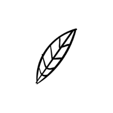
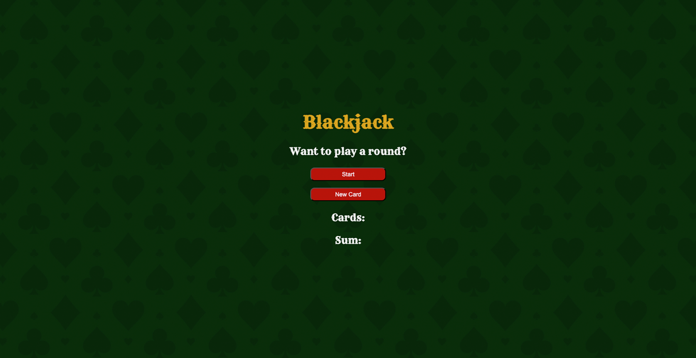
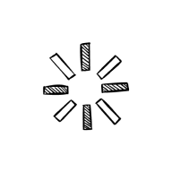
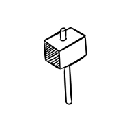
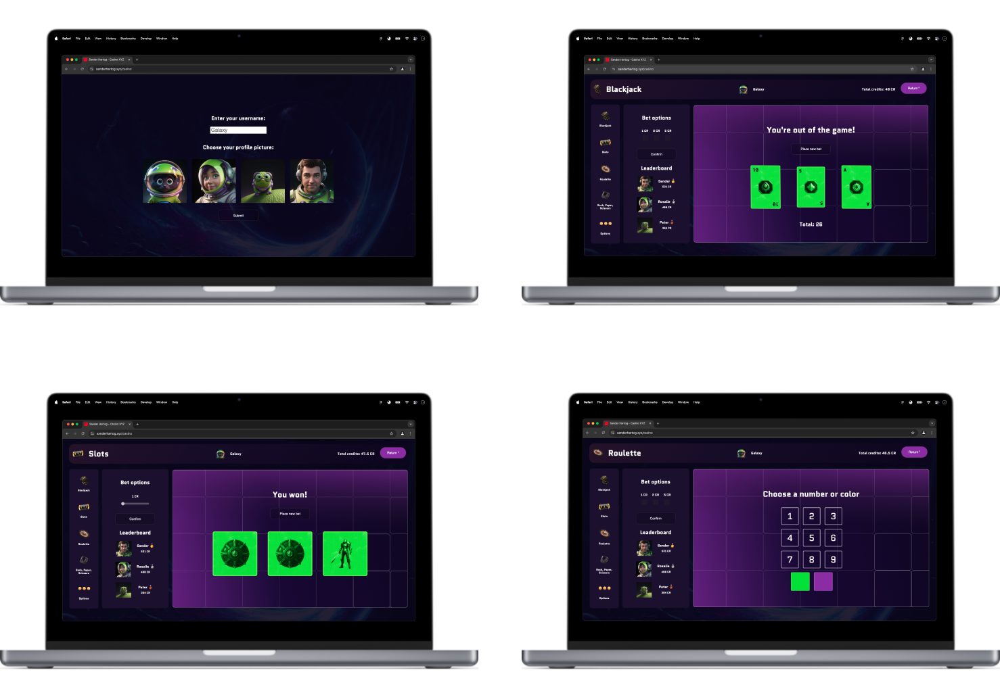
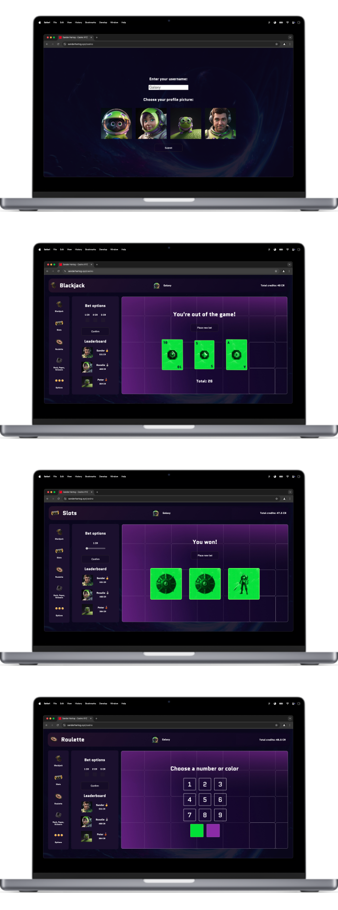
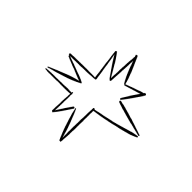

Project
Een volledig operationeel online casino creëren

Samenvatting
Ik heb een casino met een ruimtethema ontwikkeld waar spelers credits kunnen verdienen via diverse spellen

Verantwoordelijkheden
Front-End Development
Web Design
Project
Een volledig operationeel online casino creëren
Samenvatting
Ik heb een casino met een ruimtethema ontwikkeld waar spelers credits kunnen verdienen via diverse spellen
Verantwoordelijkheden
Front-End Development
Web Design
Concept
Om mijn kennis van JavaScript te verdiepen, volgde ik een paar extra cursussen naast mijn opleiding. Een van deze cursussen hielp me om een simpele versie van het casinospel Blackjack te maken. Ik vond het spel echter iets té simpel, dus besloot ik het project een stap verder te brengen door het spel zelf te upgraden. Terwijl ik aan het spel werkte, ontdekte ik dat het nog beter zou zijn om een web-based casino te bouwen, en zo ontstond het project!
Ik begon te brainstormen over mogelijke spellen en functies die ik wilde verwerken. Blackjack was natuurlijk een must, maar ik wilde de het casino verder uitbreiden. Ik voegde extra spellen toe, zoals een een slot machine, roulette en zelfs de classic steen, papier, schaar. Om ervoor te zorgen dat het project gefocust en beheersbaar bleef, paste ik de Moscow-methodologie toe, stelde ik duidelijke prioriteiten en focuste ik op de meest essentiële functies voor het concept.
Design
Om het casino uniek te maken, besloot ik het een cool ruimtethema te geven met futuristische ontwerpen voor de spellen. De speelkaarten zouden bijvoorbeeld logo's in alienstijl hebben en de slots van de slot machine zouden ruimteschepen en ruimtevechters bevatten. Ik werkte aan de ontwerpen terwijl ik elk spel codeerde, waarbij ik verschillende ideeën middels trail and error testte om de beste look en feel te vinden. Dit proces hielp om een leuke ruimte-ervaring te creëren voor de spelers.


Build
Het bouwen van het casino was een behoorlijke uitdaging, vooral omdat ik nog steeds veel aan het leren was in Javascript. Het bleek echter een goede kans om te groeien en mijn vaardigheden aan te scherpen. Voor dit project heb ik geen strikte structuur gevolgd; ik begon voornamelijk met het maken van het basis-framework en breidde het daarop gebaseerd uit. Er is veel code die ik graag in zijn geheel zou willen laten zien, maar hier zijn voor nu een paar aspecten waarop ik me heb gericht tijdens het werken aan het project.
 Wanneer spelers voor het eerst op de casino pagina komen, worden ze gevraagd een gebruikersnaam en profielfoto te kiezen. Als ze een van beide velden leeg laten of de tekenlimiet overschrijden, verschijnt er een foutmelding.
Code
-
// Anonieme input check functie
const submit = document.getElementById('submit').addEventListener('click', () => {
if(userNameInput.value === ''){
errorMessage('Please enter a username');
return
} else if (userNameInput.value.length > 8){
errorMessage('Your username cannot be more than 8 characters');
return
}
if(profilePictureSelected === true){
mainSection.style.display = "grid";
signUpSection.style.display = "none";
} else {
errorMessage('Please choose a profile picture');
return
}
...
Na succesvolle registratie worden gebruikersinstellingen en credits opgeslagen in localStorage en na elk spel bijgewerkt. Om te spelen, plaatsen spelers gewoon een 'bet', drukken op bevestigen en beginnen. Terwijl een spel bezig is, kunnen spelers niet van spel wisselen of de functionaliteit manipuleren. Nieuwe weddenschappen kunnen alleen worden geplaatst nadat het huidige spel is afgelopen en op de knop "place new bet" is geklikt.
Code
-
// Anonieme functie om de focus van het spel af te dwingen door alle andere acties uit te schakelen
confirmButtonRoulette.addEventListener('click', () => {
gameOnGoing = true;
if(betOneRoulette.checked) {
credits -= 1;
rouletteDisabled();
creditsDeposit();
setTimeout(() => {
startRouletteGame();
}, animationDurationShort);
} else if (betTwoRoulette.checked) {
...
// Functie die 'bet'-opties uitschakelt
function rouletteDisabled() {
betOneRoulette.disabled = true;
betTwoRoulette.disabled = true;
betFiveRoulette.disabled = true;
confirmButtonRoulette.disabled = true;
};
Alle spellen gebruiken een willekeurige factor om eerlijke winkansen te garanderen. Uitbetalingen worden aangepast op basis van kans. Bijvoorbeeld, bij roulette, als een speler een specifiek nummer selecteert, zijn de winkansen 1 op 9, dus de beloning wordt dan ook vermenigvuldigd met negen.
Code
-
// Functie om het resultaat te evalueren en credits toe te kennen
function checkRouletteResult(playerChoice) {
...
resultRouletteFunc();
if (randomRouletteNumber === playerChoice) {
bigWinAudio.play();
messageElRoulette.textContent = 'You won big time!';
if (betOneRoulette.checked) {
credits += 9;
} else if (betTwoRoulette.checked) {
credits += 18;
} else if (betFiveRoulette.checked) {
credits += 45;
};
creditsAccumulated();
} else {
loseRouletteAudio.play();
messageElRoulette.textContent = 'You lost!';
};
}, 3000);
localStorage.credits = credits;
};
Improve
Het was noodzakelijk om de code bij te werken, omdat er secties waren waarin ik regels overmatig herhaalde. Dit was verre van ideaal, dus besloot ik het DRY (Don't Repeat Yourself)-principe als leidraad te nemen. Het herschrijven van de code werd een logische stap, vooral omdat terugkerende animaties als functies konden worden geschreven. Dit bespaarde me al snel een honderd-tal code-lines.
Code
-
// Veelgebruikte credit time-out functies
function creditsDeposit() {
creditsText.style.color = 'red';
creditsText.textContent = `Total credits: ${credits} CR`;
setTimeout(() => {
creditsText.style.color = 'white';
creditsText.textContent = `Total credits: ${credits} CR`;
}, animationDurationShort)
};
function creditsAccumulated() {
creditsText.style.color = 'green';
creditsText.textContent = `Total credits: ${credits} CR`;
setTimeout(() => {
creditsText.style.color = 'white';
creditsText.textContent = `Total credits: ${credits} CR`;
}, animationDurationShort)
};
Terwijl ik PHP en MySQL blijf leren, ben ik van plan om het casino te verbeteren door een real-time leaderboard te implementeren. Deze functie zal scores dynamisch updaten, ter vervanging van de huidige hard-coded versie die vandaag de dag wordt gebruikt.
Ruimtevaarders zoals jij kunnen het ruimte casino betreden, dus waar wacht je nog op? Hoeveel credits kan jij bemachtigen?